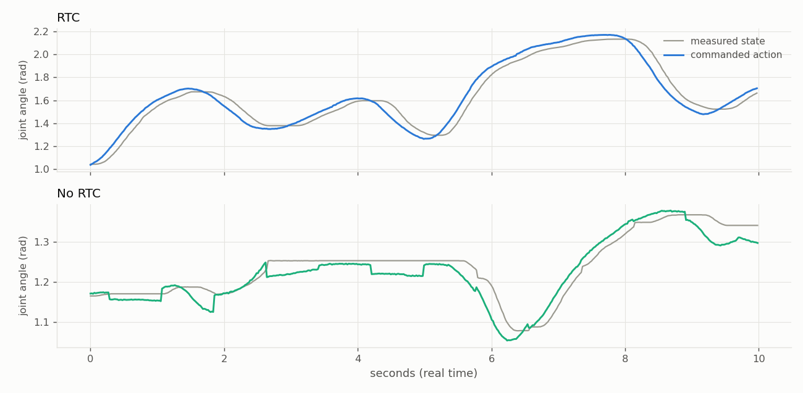
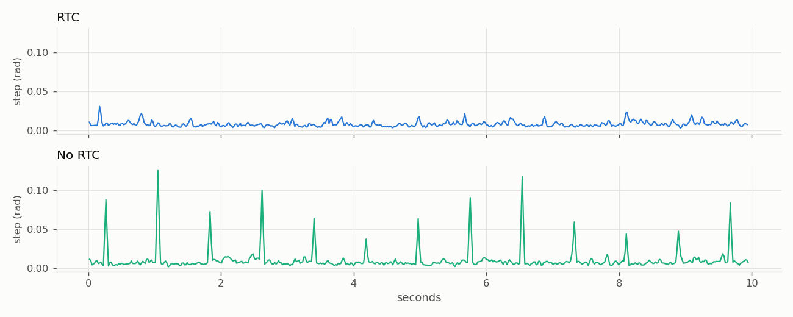
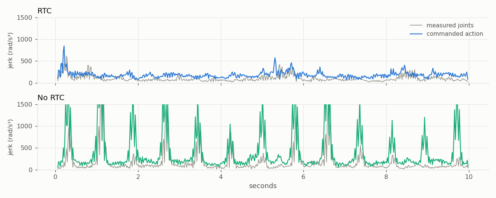

← Jack Dubie
June 28, 2026
Implementing training-time RTC in π0.5
Action-chunking policies like π0.5 predict a chunk of future actions at a time. Run them asynchronously and you get seams: the next chunk is computed while the robot is still executing the last one, and it doesn't know what the robot has already committed to. I implemented training-time realtime chunking (RTC) from Physical Intelligence in our π0.5 fork, trained it on 14 hours of teleop-only data (no DAgger), and rolled it out for 30 minutes on two rigs. It was smoother than any rollout I'd seen us try.
Every rollout from the session, on the bags rig and then the tubes rig. The label in the corner shows whether the policy (ROLLOUT) or a person (DAgger) is driving.
The change to training
The idea: during training, pretend some of the chunk was already committed. For each example I sample a delay of 0 to 5 actions. Those first actions go into the model clean, as a prefix, and only the rest are noised and learned. The model learns to continue smoothly from whatever it's handed.
# per example, simulate an inference delay of d actions
d = randint(0, rtc_max_delay + 1) # rtc_max_delay = 5
prefix = arange(horizon) < d # first d actions
t_tok = where(prefix, 0.0, t) # prefix clean (t=0), rest noised
x_t = t_tok * noise + (1 - t_tok) * actions
v_t = model(obs, x_t, t_tok) # per-token timesteps
loss = mean((v_t - (noise - actions))**2) * ~prefix # learn only the postfix
That needs one change to the model: each action token gets its own flow-matching timestep instead of one per example, so the prefix can sit at t = 0 while the rest denoises. π0.5's adaptive norm already takes the timestep, so it's the same weights; nothing new to learn from scratch, and pi05_base loads unchanged.
I've put a clean version on the train-time-rtc branch of my openpi fork (commit 1f1a8d9), with a README section on how to use it. That port passes its unit tests on small dummy models on CPU, but unlike the version in this post it hasn't been trained on a robot yet.
The change to inference
On the robot, inference runs asynchronously. Each request sends the next 5 actions the robot is already committed to as the prefix; 5 covers the measured ~59 ms of inference delay at 60 Hz with margin. The server pins those actions at t = 0 on every denoising step and only denoises the rest, so the new chunk starts exactly where the old one is going. No interpolation, no blending.
One fix came the night of the rollout: the very first chunk had no prefix, so the arms jumped at the start. Seeding it with the last commanded action solved that.
What it did
- Smooth. You can't tell when one chunk hands over to the next.
- Dexterous. It put lids on tubes 13 out of 13 times, better than a person could, including tubes in different places and one upside down.
- Stateful. Because every chunk is conditioned on what the robot just did, it never got stuck. When something went wrong it retried, which stateless policies don't do.
- About 99% autonomous. Given a clean start, almost every frame of the session was the policy's own.
A retry: the lid doesn't seat cleanly the first time, so the policy goes back and seats it again, with nobody stepping in. Tubes rig, episode 40, about 2.6× speed.
Who was driving
| Rig | Episode | Frames | Policy | DAgger |
|---|
| Bags | 1 | 6,500 | 100.0% | 0 |
| Bags | 6 | 5,598 | 100.0% | 0 |
| Bags | 11 | 10,184 | 100.0% | 0 |
| Bags | 15 | 7,890 | 100.0% | 0 |
| Bags | 25 | 7,665 | 100.0% | 0 |
| Bags | 26 | 8,364 | 100.0% | 0 |
| Tubes | 2 | 6,854 | 97.7% | 2.3% |
| Tubes | 3 | 6,156 | 100.0% | 0 |
| Tubes | 14 | 5,813 | 98.8% | 1.2% |
| Tubes | 17 | 6,131 | 100.0% | 0 |
| Tubes | 25 | 4,703 | 100.0% | 0 |
| Tubes | 34 | 4,666 | 100.0% | 0 |
| Tubes | 35 | 5,637 | 100.0% | 0 |
| Tubes | 39 | 4,275 | 100.0% | 0 |
| Tubes | 40 | 6,681 | 98.1% | 1.9% |
| Tubes | 43 | 5,606 | 93.1% | 6.9% |
| Tubes | 44 | 6,426 | 97.9% | 2.1% |
| Tubes | 45 | 6,155 | 100.0% | 0 |
| Bags, 6 episodes | | 46,201 | 100.0% | 0 |
| Tubes, 12 episodes | | 69,103 | 98.7% | 1.3% |
| All 18 | | 115,304 | 99.2% | 0.8% |
13 of the 18 episodes needed no intervention at all. The worst, tubes episode 43, was 93% policy. Totals are frame-weighted.
How much smoother
I compared the RTC rollouts with the π0.5 policies we ran before it, on both rigs.
Bags rig, the first part of an episode on each side, both at about 3× speed: the RTC policy (left) and the same recipe without RTC (right).
| Rig | Policy | Episodes | RMS jerk (rad/s³) | Peak jerk, p99 | Motion above 5 Hz | Chunk jumps /s |
|---|
| Bags | RTC | 147 | 56 | 632 | 4% | 0.03 |
| Bags | Same recipe, no RTC | 2 | 149 | 2,383 | 41% | 1.13 |
| Bags | Previous production π0.5 | 23 | 164 | 2,779 | 37% | 1.10 |
| Tubes | RTC | 12 | 45 | 456 | 6% | 0.02 |
| Tubes | Previous tubes π0.5 | 12 | 146 | 2,185 | 43% | 0.98 |

One joint over 10 seconds of real time. The commanded action (colour) is what the policy asked for; the grey line is where the joint actually went. Without RTC the commands step at chunk boundaries; with RTC they don't.

The same 10 seconds as the size of each frame-to-frame step in the command. The regular spikes without RTC are the seams between chunks.

The same 10 seconds as jerk, across all 12 arm joints. Without RTC the commanded jerk spikes at every chunk boundary; with RTC it stays low. The measured joints (grey) spike far less, because the arm's controller smooths the command.
The commands are about 3× less jerky on average and 4–5× less at their peaks (99th percentile), and the jumps between chunks are essentially gone. The arm's own controller smooths a lot of that out, so the motion at the joints is only modestly smoother on tubes and about the same on bags. Medians of the commanded actions while the policy was driving.
None of this is a controlled A/B. The only same-recipe comparison has just 2 episodes; the others are different checkpoints trained on different data, a few days apart, and the recordings don't say which scheduler ran. And π0.7, which doesn't use training-time RTC, is about as smooth as the RTC policy, so smoothness alone isn't unique to RTC.
How is this different from inpainting?
The two are fundamentally very similar and share a goal: make each new chunk agree with what the robot is already doing.
- RTC: the prefix is a clean anchor at t = 0, and the trained model learns consistency by attending over that clean prefix.
- Inpainting: the prefix is forced onto a fixed noise-to-target trajectory at the running noise level, and consistency is imposed analytically at each denoising step through a correlation correction.